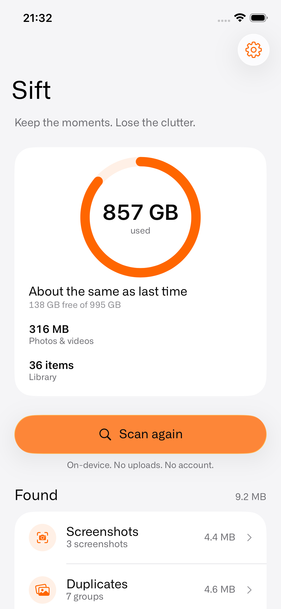

FREE · OPEN SOURCE · ON-DEVICE
A lighter
iPhone.
Sift finds the screenshots, duplicates, blurry photos, giant files and repeated contacts you no longer need — including big files you pick from iCloud Drive or On My iPhone. It works on your iPhone and never sends anything anywhere.
MIT licensed. No account, ads, analytics or subscription.

Six quiet ways to make room.
No fake gauges. No “boost” buttons. Sift only touches media, contacts and files you choose, through Apple's frameworks. It also explains what iOS will not let any app clean.
Screenshots
Tickets, chats and receipts you already used.
Duplicates
Perceptual hash plus Vision, so the same frame is caught once.
Similar photos
Same-day lookalikes grouped, with the sharpest shot kept.
Blurry photos
A conservative sharpness ranking, not a guess.
Large files
Photos, videos and picked files over 25 MB, sorted by size.
Duplicate contacts
Shared phone or email only. Preview before merging.
The whole flow.
Home, review, keep the best. Photo deletions go through Apple's Recently Deleted, so you have 30 days to change your mind. Files you pick are removed only after confirmation.



What it can't do.
iOS does not let any third-party app clear another app's cache, free RAM or cool the CPU. Cleaner apps that claim otherwise are selling a feeling.
Sift does
- ✓Find and remove media you own
- ✓Group lookalikes and suggest the best shot
- ✓Merge duplicate contacts with a preview
- ✓Show honest device storage numbers
Sift does not
- —Clean another app's cache or system “other” data
- —Boost RAM, cool the phone or extend battery
- —Upload your library or show ads
- —Charge a subscription
No network. No analytics.
There is no networking code in Sift. No account, no crash reporter, no third-party SDK. Photos and contacts stay in the app sandbox and Apple's frameworks. The privacy manifest declares no tracking and no collected data.
Verify it: grep -rnE "URLSession|NWConnection|Analytics" Sift returns nothing.